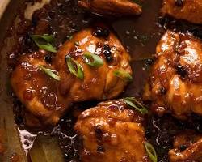

INGREDIENTS
- 1kg (2.2lb) chicken pieces (thighs, legs, breasts, or a mix)
- 1/2 cup soy sauce
- 1/4 cup white vinegar
- 5 cloves garlic, minced
- 1 onion, sliced
- 1 bay leaf
- 10 whole black peppercorns
- 1 tablespoon cooking oil
- Salt to taste
|

|
PROCEDURE
- Wash and pat dry the chicken pieces.
- In a large bowl, combine soy sauce, vinegar, garlic, bay leaf, and peppercorns. Add chicken pieces and marinate for at least 30 minutes, or up to overnight for deeper flavor.
- Heat oil in a pot or Dutch oven over medium heat.
- Sear the chicken pieces until golden brown on all sides.
- Pour the marinade into the pot with the chicken. Add 1/2 cup water and bring to a boil.
- Reduce heat, cover the pot, and simmer for 30-40 minutes, or until chicken is cooked through and tender.
- During the last 10 minutes of simmering, you can adjust the consistency of the sauce:
- Season with salt to taste.
- Serve hot with rice and enjoy!
|
Chicken adobo, also known as adobong manok, is a quintessential filipino braised chicken,
marinated and stewed with vinegar, soy sauce, garlic, bay leaves, black peppercorns |